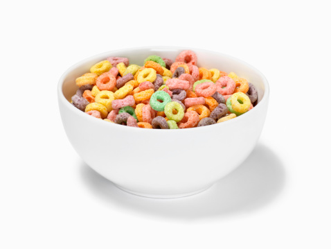

#1 Best Cereal Recipe

Brief overview of the #1 Best Cereal Recipe
This quick and easy breakfast meal takes minutes to prep, and is absolutly to
die for. This recipe is composed of a total of four base ingredients!
List of ingredients Required
- Handmade Stoneware Ceramic Bowl
- 24k Gold-Plated Dinner Size Spoon
- Arabaian Grass-Fed 2% Whole Milk
- Box of Kellogs Grade Fruitloops
Steps to Crafting Perfection
- Firmly Grasp Fruitloops and pour into Ceramic Bowl
- Add Grass-Fed 2% Milk atop of Fruitloops
- Let Contents of Ceramic Bowl set for 1min 30sec
- Insert 24k Dinner Size Spoon into bowl and enjoy